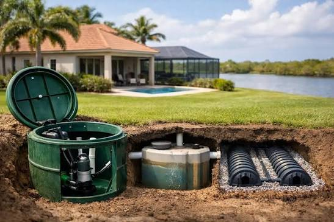

01
Know Your Schedule
Keep track of pumping and inspection requirements instead of waiting for an unexpected issue.

Thoughtful septic system care for homeowners who value reliability, clear communication, and professional service from start to finish.
Septic systems are easy to overlook until something goes wrong. ClearFlow Septic takes a proactive approach, helping homeowners understand their system and stay ahead of routine care.
We believe professional septic service should be organized, transparent, and respectful of your home and property.

Pumping intervals, inspections, wastewater habits, and property conditions can all play a role in maintaining a septic system.
Read the Maintenance GuideKeep track of pumping and inspection requirements instead of waiting for an unexpected issue.
Changes in drainage, odors, or system performance can be reasons to seek professional guidance.
Routine professional care helps you stay informed about your septic system.
From everyday maintenance to situations that require professional attention, ClearFlow provides focused septic services for your property.

Your septic system is connected to the way your property functions every day. Professional maintenance helps you understand its condition and plan for necessary care.
Stay informed about an important part of your property's infrastructure.
Planned maintenance makes it easier to address routine service needs.
Give your wastewater system the attention it needs over time.

“Professional septic service should leave you with more clarity, not more questions.”
Know what service is being performed and why it matters.
A clear appointment and service experience from beginning to end.
Careful work practices throughout the service visit.

Instead of thinking about your septic system only when there is a problem, build a simple maintenance routine around your property's needs.